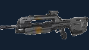
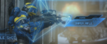
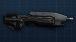
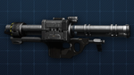
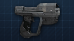
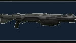
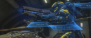
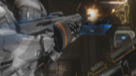

| DMR |
The M395 DMR is a gas-operated magazine-fed marksman rifle
that maintains a smart-linked, telescopic, rail-mounted sight for scout personnel.
This rifle favors mid-range to long-range combat, offering impressive stopping power.
Premier marksman rifle of the UNSC, offering impressive
single-fire accuracy at reasonably
long distances. |
 |
| Battle Rifle |
Utilizes precise, three-round burst functionality,
making it a formidable mid-range, semi-automatic weapon
. Five shots will take down an enemy without an over-shield. |
 |
| Sniper Rifle |
The SRS99-S5 AM is a gas-operated, magazine-fed, semi-automatic
sniper rifle with exceptional accuracy and the ability to simultaneously
breach both energy-shielding and high-density armor, making immediate kills
nearly effortless when this weapon is properly utilized. |
 |
| Assault Rifle |
Standard fully automatic firearm of all UNSC branches,
effective at both close-range and mid-range combat. |
 |
| Rocket Launcher |
The Rocket Launcher, or the M41 SSR MAV/AW, is a portable, twin-tube,
shoulder-fired rocket launcher, capable of firing two 102mm rockets with
incredibly destructive potency. It is easily one of the most pervasive
explosive weapons within the UNSC's arsenal, largely due to its
transportability and firepower. Devastating from close-range to mid-range,
capable of tracking airborne vehicles after locking onto them. |
 |
| Magnum |
UNSC's personal sidearm of choice due to its excellence at
close-range to mid-range engagements. In halo 4, the magnum takes more of a
side-arm role as the user becomes faster and the weapon does less damage then
other semi automatic weapons like the LightRifle or DMR. The most notable change
is the ability to carry the flag in CTF games while wielding a Magnum at the same time. |
 |
| Shotgun |
Dominant close-quarters weapon specializing in boarding actions,
breach maneuvers, and urban operations. at short range, this weapon also devastates
shielded targets due to it's devastating stopping power. |
 |
| Rail Gun |
Powerful linear accelerator that fires explosive rounds at tremendous speed to
efficiently eliminate targets. One shot, that it is accurate, will kill most enemy
tagets in one shot. The railgun fires similar to the Spartan Laser, as it has a charge
time before it can be fired. |
 |
| Spartan Laser |
The Spartan Laser is a man-portable, shoulder mounted charged
weapon which uses battery cells to fire a powerful red laser, but takes approximately
3 seconds to fire. It is mainly used as an anti-vehicle weapon, and excells at taking
down the lightly armoured vehicles such as warthogs and ghosts. It can be difficult to
kill spartan or elite targets with this weapon due to it's visual red targeting laser
or its charge-up sound, but it has no recoil and is perfectly aimed at any distance.
The spartan laser can immediately hit what it is pointed at, with great lethality, as
the image above shows, it makes short work of vehicles like banshees. Formidable nonlinear
coherent light rifle that is highly proficient at destroying vehicles over impressively
long distances. |
 |
| Sticky Detonator |
Single-hand, short-range explosives launcher which can detonate remotely and
at the operator's discretion. First shot fires the sticky projectile, which attaches to any surface
or enemy it hits, and second shot detonates the sticky. There is a delay before the sticky can be
detonated. |
 |
| Saw |
SAW stands for squad automatic weapon and is used in protracted engagements where
sustained or suppressive fire is required. |
 |